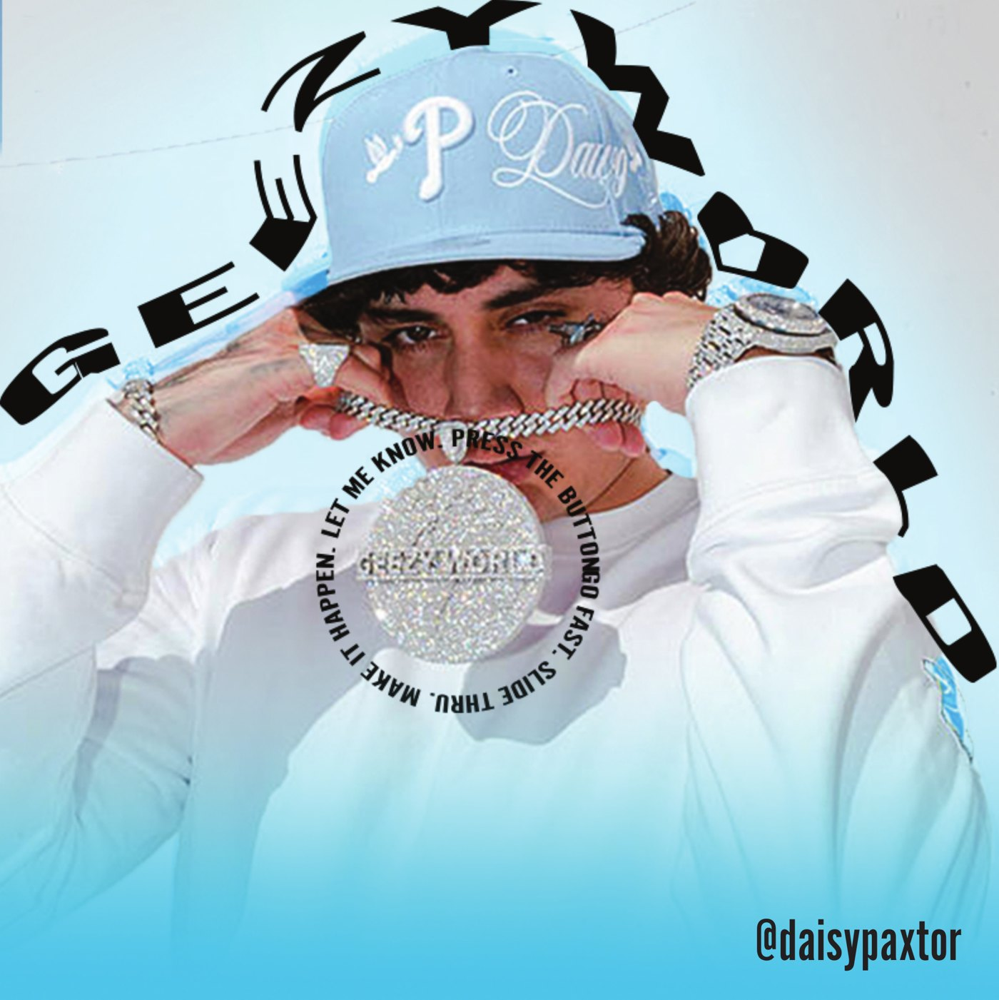
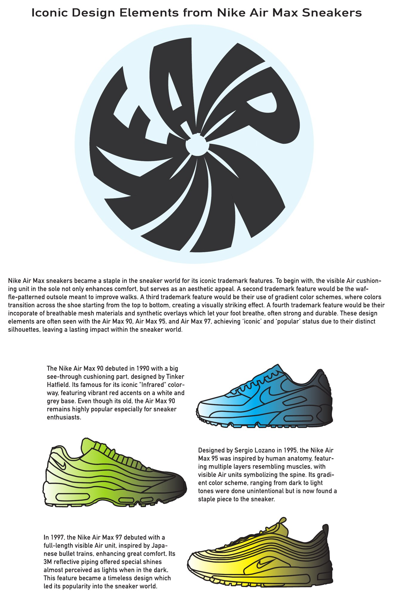
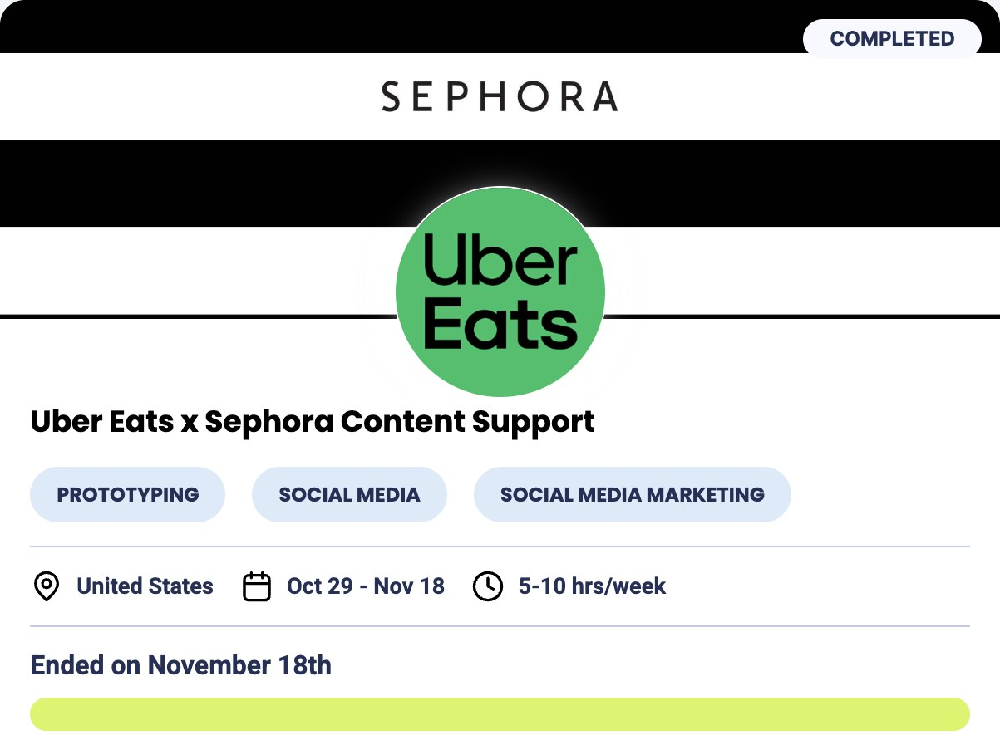

Designer · Video Editor · Content Creator
I design graphics, edit videos and create content, bringing a creative eye and an economics background to every project.
01
Flyers, posters and social graphics designed to be bold, clear and easy to read at a glance.
02
Short-form and long-form edits, with careful attention to pacing, transitions, titles and music.
03
Original content shaped around a brand’s voice, its audience and the results it needs.
About me
I’ve been creating for as long as I can remember: designing graphics, editing videos and making original content just because I loved bringing ideas to life. Along the way, I earned a degree in economics, and it changed how I see creative work.
Economics taught me that attention is one of the scarcest resources there is. Every piece of content competes for it, and the work that wins isn’t just beautiful. It’s strategic. It understands its audience, earns its place in a crowded feed and delivers real value to the brand behind it.
That’s the perspective I bring to every project. I think like a creator and an analyst at the same time, asking what will make someone stop scrolling and how the work can serve the brand behind it.
Education
University of California, Berkeley
Bachelor of Arts in Economics
Berkeley, CA · Aug 2026
UC Education Abroad Program, University of Bologna
Study abroad semester
Bologna, Italy · Fall 2025
Tools
Adobe Photoshop and Illustrator
CapCut
iPhone 15
HTML, CSS, JavaScript, TypeScript and R
Projects across video, design and brand content, each with the goal behind it.
01
Every trip, captured in minutes. Shot entirely on my iPhone 15 and edited by me, from pacing and transitions to titles. Music is my favorite part: I chop and mix songs until the sound fits the story and every cut lands on the beat. No fancy gear, just a good eye, a good ear and making the most of what I’ve got. See more on my Instagram, @islassco.
Featured edit · Two-part series
A two-part winter edit of New York. Part 1 follows a January day, from the ferry and skyline to Grand Central and the Met. Part 2 picks up after dark, with Times Square crowds and the lights of Hudson Yards.
Featured edit · Video
A travel edit through Paris: the Eiffel Tower glowing over the Seine, city streets by day and fireworks over the castle at Disneyland Paris.
Featured edit · Two-part series
A two-part winter edit of Switzerland. Part 1 heads into the Alps, with snowy peaks, ski slopes and a cliffside walkway above the clouds. Part 2 moves to Zurich, with blue trams, Christmas markets and the opera house lit up at night.
Featured edit · Video
An island-hopping edit across Greece: Santorini’s cliffs and caldera, ferry rides, the white-washed streets of Mykonos and the Acropolis in Athens.
{{ counter }}
02
Projects from UC Berkeley’s Graphic Design Principles DeCal, where I learned Photoshop and studied color theory, branding and the foundations of design. The result: cover art and editorial design built on bold type and color.

Graphic design · Album cover
An album cover built on warped, orbiting type, with a circular lyric line that pulls the eye straight to the center.

Graphic design · Editorial poster
An informational poster on the Air Max 90, 95 and 97, with a custom swirl logo mark and hand-built gradient illustrations of each shoe.
03
Paid campaign content booked through Home From College, a marketplace that connects college students with brand gigs. Created on brief and on deadline.

Brand content · Collaboration
Selected as a campus creator to launch Sephora delivery on Uber Eats. I concepted, filmed and posted two TikToks on deadline, showing beauty favorites arriving right at the door.
The original videos are no longer available. A signed creator agreement is available on request.
04
From my TikTok archive: past unboxings, hauls, tours and event recaps I filmed and edited myself, in the native, creator-led style brands look for in UGC.
Open to full-time roles and freelance projects in design, video, social media and brand content, and eager to keep expanding my work with every new opportunity.